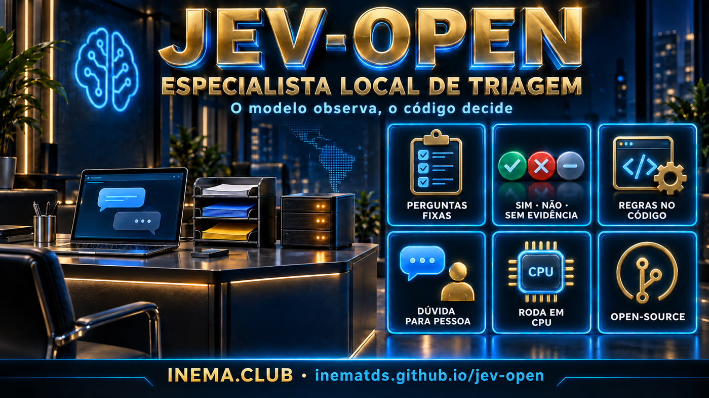

A small specialist that runs on your machine, reads each message, and answers fixed questions with yes, no, or can’t tell. Uncertain cases always go to a person.

Research and education project. It does not claim parity with Jev or production readiness. The repository examples use synthetic data, and every number is labeled [measured], [reported], or [simulated].
Each question on the form (“do you want to schedule?”, “is there an urgent issue?”) becomes yes / no / uncertain, with a calibrated probability. Lack of evidence never becomes “yes.”
Scheduling, deadlines, amounts, priority, and queues are handled in shared code. The model only observes, and a keyword list can escalate critical cases.
Trains on a GPU, serves on a CPU with ONNX int8 (~570 MB), in an API without torch and in a Docker container. No message leaves the machine.
Every message still reaches a person. The specialist only prioritizes the queue and flags urgent cases.
Task form → reviewed examples → data → untrained baseline → train the last 2 layers → frozen final test + OOD lane.
API POST /classify on CPU. Empty text, text that is too long (never truncated), or an internal error goes directly to human review.
Each stage saves a JSON with hashes, metrics, and all predictions. Nothing is overwritten, and the final test runs only once.
A GPU helps a lot for training. A CPU is enough for serving.
Manages training dependencies (torch, transformers, onnx).
uv syncOnly for generating synthetic prototype data with a local LLM, at no API cost.
ollama pull qwen3:30bThe image only includes onnxruntime and tokenizers. The weights are mounted in /pacotes.
docker compose up --buildThe same commands work for any niche; only the folder tasks/<nicho>/ changes. The complete step-by-step guide, including precautions for each niche, is in docs/PASSO-A-PASSO.md.
Check whether torch can see the GPU.
git clone https://github.com/inematds/jev-open && cd jev-open uv sync uv run python -c "import torch; print(torch.cuda.is_available())"
Questions, three hypotheses per question, the meaning of each label, actions for each queue, a critical question, and targets. Use an existing niche as a template.
mkdir tasks/meu-nicho cp tasks/advocacia-atendimento/{ficha.yaml,regras.py,rede_urgencia.py,__init__.py} tasks/meu-nicho/ # edit ficha.yaml, regras.py, and the keyword list
A person from the niche reviews the examples (gate 1). They count only as a test and never become training data.
uv run python tools/zeroshot_smoke.py meu-nicho # receipt in tasks/meu-nicho/recibos/
Real, anonymized messages are ideal. For prototyping, the synthetic data generator uses a local LLM and a second LLM as a verifier, with everything labeled as synthetic.
uv run python tools/gerar_sintetico.py meu-nicho tasks/meu-nicho/dados/sintetico.jsonl \ --n 320 --gerador qwen3.6:35b-a3b --verificador qwen3:30b --prefixo syn uv run python tools/pipeline.py preparar meu-nicho # split by group + dedup + manifest
The baseline determines whether training is worthwhile. The final test runs once, with both the baseline and trained model, on the test set and the OOD split.
uv run python tools/pipeline.py baseline meu-nicho uv run python tools/pipeline.py treinar meu-nicho uv run python tools/pipeline.py testar meu-nicho
ONNX int8, with a parity gate (±1 pp against fp32) and latency measurement. The API rejects the package if the spec has changed since training.
uv run python tools/exportar_onnx.py meu-nicho mkdir -p pacotes && cp -r workshops/meu-nicho-v1/pacote pacotes/meu-nicho JEV_PACOTES=pacotes uv run python -m serve.api --tarefas meu-nicho uv run python tools/testar_servico.py http://127.0.0.1:8080 meu-nicho
Always limited to administrative tasks: no legal opinions, no diagnosis. Keyword lists and fixed texts must be validated by professionals before any real use.
7 questions: schedule, service, case status, payment, document, legal question, and urgency (jail, hearing, or deadline today/tomorrow, warrant, eviction). Urgency marked “yes” or “uncertain” goes to the attorney immediately; the goal is zero missed urgent cases. Case updates only after verifying identity (confidentiality).
4 questions: schedule, reschedule, document, and warning symptom. An alert marked “yes” or “uncertain” goes to a person immediately; the goal is zero missed alerts. Health data is sensitive under the LGPD, so everything runs on the clinic’s machine.
POST /classify?tarefa=advocacia-atendimento {"texto": "Boa noite, meu filho foi preso agora há pouco e está na delegacia do centro..."} # response format (excerpt) {"decisao": {"prioridade": "advogado_imediato", "motivos": ["urgencia=sim -> advogado_imediato", "rede de palavras-chave: delegacia, preso -> advogado_imediato"]}, "observacoes": {"urgencia": {"rotulo": "sim", "confianca": ..., "probs": [...]}, ...}}
Status as of 2026-09-25. Anything that depends on real data or a real VPS has not yet been measured.